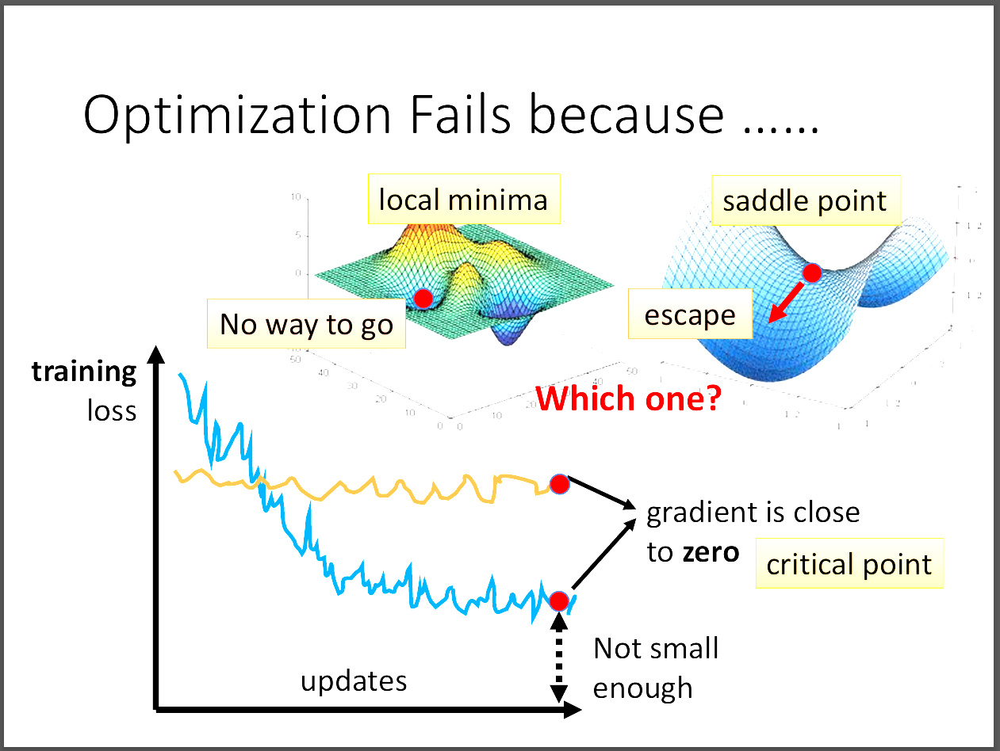

台大教授李宏毅老師[機器學習概論2021][類神經網路訓練不起來怎麼辦 (一)： 局部最小值 (local minima) 與鞍點 (saddle point)]
📘 文章探討
1️⃣為什麼Optimization會失敗?
2️⃣Local Minima v.s Saddle Point
3️⃣面對Saddle Point如何逃脫?
4️⃣其實local minima的情況非常少見!?
5️⃣Reference
1️⃣ 為什麼Optimization會失敗?
由前一個文章的探討，我們知道若類神經網路train不起來有很多種因素，
端看是在training data的loss過高還是在testing data的loss過高。
若在training data的loss過高，我們還可以細分成是optimization的策略不好，
還是模型的大小不夠大。前一篇文章探討了模型大小(model bias)所造成的影響，
本文改探討optimization的策略問題。

看到上面這張圖，當我們使用gradient descent但loss依然很高時，
通常會去推論是不是到了critical point了。
其中critical point有兩種，第一種是local minima，第二種則是saddle point。
此時有沒有辦法去辨別到底我們是處在local minima還是saddle point?
答案是可以的!那為什麼我們會想要知道到底是在哪一種critical point?
原因是如果再critical point，那就真的無路可走，要再重新選擇地點進行optimization。
但如果是在saddle point，那我們依然有路可以逃離。
接下來就來探討到底要怎麼去分辨這兩種的差異!
2️⃣Local Minima v.s Saddle Point
首先我們想要知道藍色θ的loss function的形狀長怎樣?
其中藍色&theta的loss function可以用Taylor's approximation近似成圖片中的function。
又因為身處在critical point，所以綠色的部分其中的gradient為0，就只要專注在紅色的部分就好。
我們把(θ-θ')設為v。
1. 若紅色部分大於零，代表周圍的任何θ所在的loss都大於該點，因此處在local minima。
2. 若紅色部分小於零，代表周圍的任何θ所在的loss都小於該點，因此處在local maxima。
3. 若對於有些v來說是大於零，但對於其他某些v來說是小於零，則可以推論為saddle point。
但是要怎麼判斷紅色部分究竟大於零還是小於零，考慮線性代數正定矩陣性質。
對於任何v，若Hessian matrix H的所有eigenvalue都大於零，則為正定矩陣，
故對所有的v來說紅色部分必大於零。
相反的，若對於任何v，Hessian matrix H的所有eigenvalue都小於零，則為負定矩陣，
對於所有的v來說紅色部分都必小於零。
3️⃣面對Saddle Point如何逃脫?
剛剛提到當我們遇到saddle point的時候，其實有機會逃脫gradient等於零的險境。
但是具體要怎麼逃脫呢?因為gradient=0，所以只能從H找到線索。
首先我們取H的一個eigenvector u，帶入v的部分，可得uTHu。
又uTHu=λ|u|2，因為u是eigenvector。
此時我們只要去判定到底λ是正是負。舉λ小於零的例子，
因為λ小於零的關係，可知L(θ)小於L(θ')，處在loss大的地方。 則因為θ-θ'=u，又可得θ=θ'+u。
故我們只要把原本θ'沿著eigenvector u的方向加上這個向量，
就可以得到一個比較小的loss。
但現實世界因為要計算H的特徵值跟特徵向量過於複雜，計算量很龐大，
所以我們在實作的時候不會真的用這個方法來逃離saddle point。
4️⃣其實local minima的情況非常少見!?
有一種可能，我們在二維世界看到的local minima，再三維甚至更高維度的地方，
那個所謂的local minima會不會只是saddle point!
實驗也證實其實local minima並不是那麼的常見!
下一篇文章老師會介紹遇到saddle point時我們可以怎麼解決。